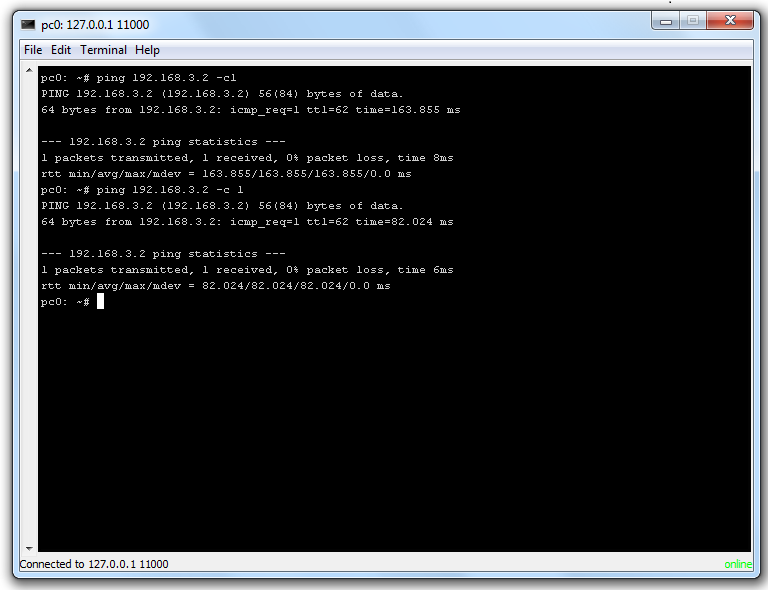

Tutorial 3: Advanced features
Telnet for virtual device access
You can connect to virtual devices on server with boundled Swing Telnet client.
Opening telnet window
You can access telnet window in simultor mode with right mouse button on component you want to connect to. Next image shows popup menu with telnet button.

Telnet window
You can see telnet client windows on the next image.
Next part of this tutorial is: Adding new lanugage.